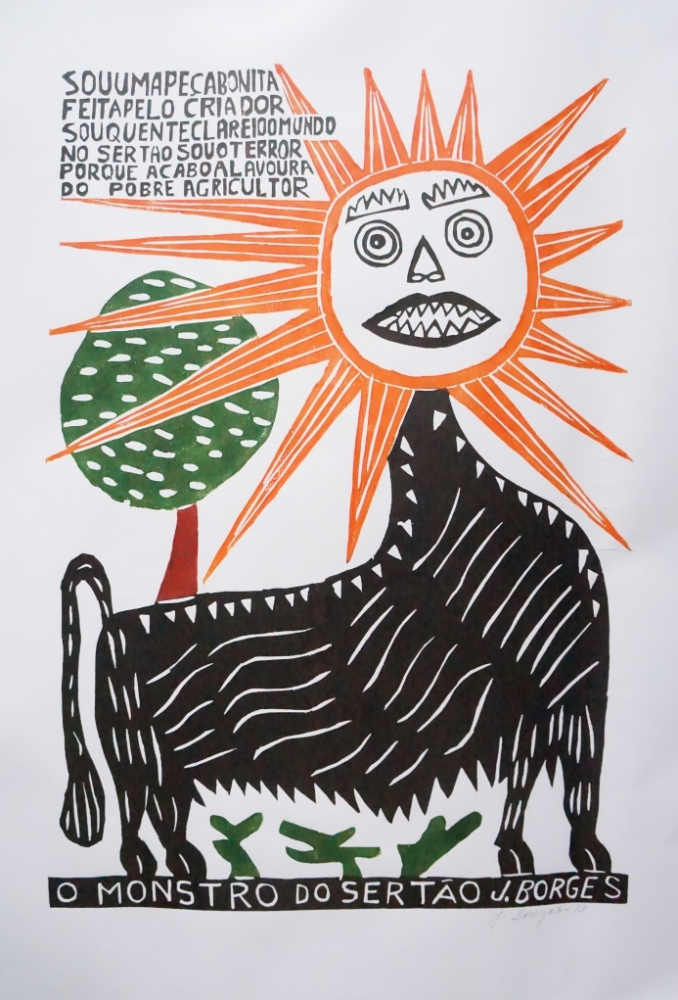
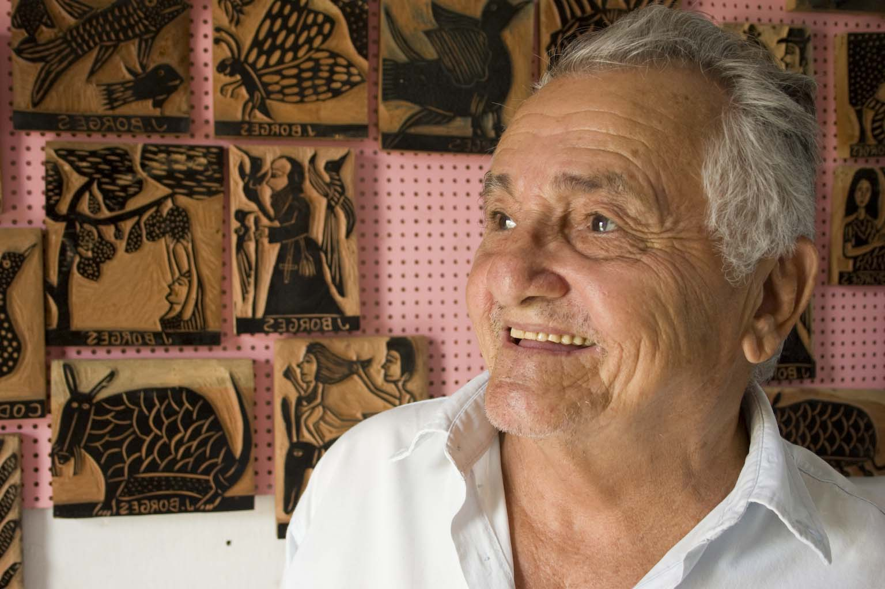

O gravador e cordelista J. Borges é destaque em exposição no Museu Olho Latino

"Lua Cheia" - J. Borges
Atibaia: O Museu Olho Latino, localizado no Centro de Convenções “Victor Brecheret”, em Atibaia, SP, apresenta a exposição “Coleção J. Borges” composta por 15 obras, de 20 de novembro de 2014 a 19 de dezembro, como uma das mostras comemorativas do lançamento do catálogo digital de seu acervo nacional, projeto que conta com o apoio do Governo do Estado de São Paulo, Secretaria de Estado da Cultura - Programa de Ação Cultural 2013.

"Lampião no Forró do Vale Tudo" - J. Borges
A mostra “Coleção J. Borges” traz 15 xilogravuras que o Museu Olho Latino possui desse artista, com temas festivos e alegres, constituindo uma das coleções mais importantes do museu. José Francisco Borges, conhecido como J. Borges, nasceu em 1935, no município de Bezerros, Pernambuco, onde reside até hoje, escrevendo, ilustrando e publicando os seus folhetos de cordel.

"O Monstro do Sertão" - J. Borges
A década de sessenta foi um marco na vida do artista: sua obra e sua técnica, conhecida por tacos, passou a ser reconhecida nacionalmente como uma atividade cultural. Hoje essas xilogravuras são impressas em grande quantidade, em diversos tamanhos, e vendidas a intelectuais, artistas e colecionadores de arte.

J. Borges (foto: divulgação)
J. Borges é reconhecido como mestre da cultura brasileira. Em 1970 ilustrou a capa do livro “Palavras Andantes”, de Eduardo Galeano, e indicado por Ariano Suassuna fez as gravuras da abertura da novela Roque Santeiro, da Rede Globo. Em 2005, recebeu do Estado de Pernambuco o título de Patrimônio Vivo e em 2006 foi considerado pelo jornal New York Times o “Gênio da Cultura Popular”. Segundo o curador, Paulo Cheida Sans, o pernambucano J. Borges é um ícone da gravura popular e representa muito bem a Arte Brasileira”.
A entrada é gratuita e a mostra poderá ser visitada na Al. Lucas Nogueira Garcez, 511 - Parque das Águas – em Atibaia, SP.
Exposição: Coleção J. Borges do Museu Olho Latino.
Curadoria: Paulo Cheida Sans.
Período da mostra: 20 de novembro a 19 de dezembro de 2014.
Visitação: de segunda a sexta-feira, das 09h às 16h.
Local: Museu Olho Latino - Centro de Convenções e Eventos "Victor Brecheret".
Endereço: Al. Lucas Nogueira Garcez, 511 - Parque das Águas - Atibaia, SP.
Realização: Museu Olho Latino e Secretaria de Cultura e Eventos - Prefeitura da Estância de Atibaia - com o apoio do Governo do Estado de São Paulo, Secretaria de Estado da Cultura - Programa de Ação Cultural 2013.
fonte: Portal Olho Latino

CAIXA Cultural expõe obras que contam a história do papel na arte brasileira

Tarsila do Amaral, Di Cavalcanti, Tomie Ohtake, Paulo Cheida Sans e
outros artistas importantes participam da mostra (foto: Rodrigo de Oliveira)
outros artistas importantes participam da mostra (foto: Rodrigo de Oliveira)
Brasília: Fabricado com base na celulose há quase dois mil anos, o papel se tornou uma das tecnologias mais duradouras e cruciais para o desenvolvimento do engenho humano, beneficiando a técnica do desenho e de outras linguagens como a gravura. No Brasil, as artes do papel ganharam pleno espaço no século 20. É o que mostra a exposição Metamorfoses – O Papel no Acervo da Caixa, em cartaz do dia 28 de outubro a 11 de janeiro de 2015 na Galeria Acervo da Caixa Cultural de Brasília.
A mostra reúne 60 trabalhos unidos pela similaridade do suporte papel. São desenhos e gravuras que contam a história e trajetória do uso do papel na arte, por meio da obra de artistas brasileiros como Tarsila do Amaral, Di Cavalcanti, Oswaldo Goeldi, Artur Barrio, Marcelo Gassmann, Djanira, Fayga Ostrower, Tomie Ohtake, Glênio Bianchetti e Paulo Cheida Sans.
“A exposição dá continuidade à política da CAIXA de disponibilizar acesso às obras de sua coleção, que constitui patrimônio público”, comenta Marcelo Moreira dos Santos, gerente de Filial da CAIXA Cultural Brasília. “Esta mostra propõe um contato direto com rico material de referência histórica, que tem o uso do papel como suporte expressivo para uma diversidade de artistas”, comenta o gestor.
Junto com os trabalhos de pinturas, a coleção de obras desenvolvidas sobre papel constitui um dos principais acervos da CAIXA. Só em Brasília existem mais 300 obras arquivadas. Como aconteceu na América Latina, não só a força da cultura nacional, com seus mitos, folclores e tradições populares, mas também as adversidades sociais e políticas do país influenciaram os trabalhos desses artistas a partir de uma investigação estética pertinente.
Data de 1945 a obra mais antiga do acervo que faz parte da exposição Metamorfoses – O Papel no Acervo da CAIXA. Trata-se do desenho desenvolvido em nanquim sobre o papel do artista modernista cearense Antônio Bandeira. Mas o curador Allan de Lana explica que alguns desses trabalhos fazem referências a obras dos anos 1920, como é o caso da gravura Estrada de Ferro Central do Brasil, da pintora Tarsila do Amaral. “É a versão em serigrafia de um óleo sobre tela de 1924”, revela.
Entre os trabalhos exibidos, merecem destaques duas gravuras realizadas em serigrafia pelo pintor Di Cavalcanti: Mulata, de 1965, e um registro de 1973, sem título. Obras expressivas de mestres como Tomie Ohtake, Wagner Hermusche e Fayga Ostrower, premiada com suas gravuras na Bienal de Veneza nos anos 1950, também fazem parte da mostra. Para facilitar a compreensão e entendimento por parte dos visitantes, as obras serão expostas com textos auxiliares com informações sobre as técnicas utilizadas pelos artistas. “Nesse sentido a exposição Metamorfoses é bem didática”, observa o curador.

Gravuras de Paulo Cheida Sans (foto: Rodrigo de Oliveira)
O artista e curador do Museu Olho Latino, Paulo Cheida Sans, que participa da mostra com três gravuras em linóleo, conta que em vários períodos de sua carreira participou de exposições em Brasília, assim como atuou como curador nessa cidade em vários eventos, como aconteceu no 1º Festival de Arte e Cultura Latino-Americana realizada em 1987. Na capital do Brasil, obras de sua autoria, além do acervo da Caixa, também estão nas coleções da Casa da Cultura Latino-Americana da Universidade de Brasília e no Museu de Arte. Cheida declara que “é uma grande honra expor juntamente com grandes artistas que figuram na história da arte brasileira”.
Para Allan de Lana Frutuoso, curador da exposição, o valor cultural, artístico e histórico do acervo é incalculável por refletir, em alguns momentos, a história do Brasil. “O Brasil sempre teve uma produção potente nessa área, cobrindo parte do modernismo da década de 20, passando pelas vanguardas das décadas de 50 e 60, cobrindo, inclusive, momentos de reclusão da arte em choque com o regime militar”, comenta Lana.
A exposição Metamorfoses – O Papel no Acervo da CAIXA pode ser visitada até 11 de janeiro de 2015, de terça-feira a domingo, das 9h às 21h, na Galeria Acervo da Caixa Cultural de Brasília, situada na SBS, quadra 4, lotes 3/4 - Asa Sul, anexo à matriz da CAIXA.
Exposição: Metamorfoses – O Papel no Acervo da CAIXA.
Local: Galeria Acervo da CAIXA Cultural Brasília.
Endereço: SBS, quadra 4, lotes 3/4 - Asa Sul, anexo à matriz da CAIXA.
Visitação: De 28 de outubro de 2014 a 11 de janeiro de 2015, de terça-feira a domingo, das 9h às 21h. Entrada franca.
fonte: Portal Olho Latino
Catalogação e Novo Site do Acervo Olho Latino
Acervo Olho Latino: O Museu Olho Latino está na fase final da catalogação do seu Acervo Nacional. Muito em breve novas informações estarão disponíveis sobre o lançamento do novo Site do Acervo Olho Latino! Este projeto é realizado com o apoio do ProAC.
Abaixo estão alguns nomes de artistas acompanhados por prévias que apresentam um pouco do que poderá ser conferido neste novo website:
Aos poucos serão liberadas mais algumas prévias. Fique de olho aqui no Portal!
Grupo Olho Latino participa de mostra coletiva no Museu Itajaí Martins em Botucatu

Botucatu: O Grupo Olho Latino participa da mostra Vi(ver) Diálogo Gráfico, que expõe obras de mais de 30 artistas convidados, residentes no Estado de São Paulo, de 04 a 30 de outubro no Museu de Arte Contemporânea “Itajaí Martins” em Botucatu, SP.
O projeto Vi(ver) Diálogo Gráfico objetiva expandir a apreciação sobre as possibilidades da gravura em suas diversas possibilidades técnicas, numa interface com o desenho e outras manifestações gráficas. A participação do Grupo Olho Latino consiste na instalação “Círculos Ambiciosos”, composta por 36 peças de gravura em linóleo sobre tecido, acondicionadas em círculos de madeira de várias dimensões. As peças, expostas no todo ou parcialmente, caracterizam um trabalho em equipe, sendo que cada integrante participa com a sua criação para dar maior expressão para o conjunto. Para o coordenador do Grupo, Paulo Cheida Sans, “essa é a grande força do Grupo Olho Latino: manter a individualidade de criação de cada integrante com força de equipe para resultar a criação de algo maior”. Complementa: “A soma é importante. Trata-se de compartilhar a visão, o tempo e a materialidade em função do todo”.
O Grupo Olho Latino representa o setor de arte-educação do Museu Olho Latino, sediado em Atibaia, SP, e mantém atuação intensa, desde a sua primeira mostra realizada na Galeria da Casa da Cultura da América Latina da Universidade de Brasília, em 1996. A partir daí, o grupo já expôs em mais de 80 mostras realizadas em várias cidades, entre elas, São Paulo (SP), Recife (PE), Curitiba (PR), Juiz de Fora (MG), Piracicaba (SP) e também no exterior, como em Lima e Cusco, Peru; La Paz, Bolívia; e Santiago, Chile. O grupo é formado por 9 integrantes do interior do Estado de São Paulo, coordenados pelo casal Celina Carvalho e Paulo Cheida Sans (Campinas, SP). Participam da equipe, além dos coordenadores, os seguintes artistas: Alex Roch (Jundiaí, SP), Cibele Marion Sisti (Jaguariúna, SP), Lisa França (Campinas, SP), Maricel Fermoselli (Campinas, SP), Suely Arnaldo (Sumaré,SP), Walcirlei Siqueira (Americana, SP) e Young Koh (Campinas, SP).
A coordenação do projeto Vi(ver) Diálogo Gráfico é de Hélio Schonmann e Lúcia Neto. A curadoria é de Francisco Maringelli, Hélio Schonmann e Paulo PT Barreto. Participam do projeto os seguintes artistas: Augusto Sampaio, Camilo Thomé, Francisco Maringelli, Gilberto Tomé, Hélio Shonmann, Kika Levy, Lúcia Neto, Márcio Périgo, Paulo Camillo Penna, Paulo P T Barreto, Pedro T. Maluf, Rubi, Salete Munin, Sergio Kon, Grupo Olho Latino, Fábio de Bittencourt, Paula Almozara, Maria Lúcia Panizza, Márcio Pannunzio, Adriano Gambim, Edson Mac, Sérgio Andrejaukas. Lígia Rodrigues, Milton Turcato, Fabíola Nortari, Fabrício Lopez, Márcia Santtos, Carlos Zambon, Fábio Sapede, George Gutlich, Sérgio Silva, Douglas Norris, Johann Gutlich.
A abertura da mostra Vi(ver) Diálogo Gráfico será 04 de outubro, às 11h, onde acontecerá o encontro com os artistas. O MAC “Itajaí Martins” em Botucatu, SP, está localizado no Saguão do Teatro Municipal na Praça Coronel Moura, 27, Paratodos, Botucatu, SP. A entrada é franca.
Vi(ver) Diálogo Gráfico é um projeto realizado com o apoio do Governo do Estado de São Paulo, Secretaria de Estado da Cultura - Programa de Ação Cultural de 2013.
Exposição: Vi(ver) Diálogo Gráfico
Idealização: Hélio Schonmann
Coordenação do projeto: Hélio Schonmann e Lúcia Neto.
Curadoria: Francisco Maringelli, Hélio Schonmann e Paulo PT Barreto.
Expositores: Augusto Sampaio, Camilo Thomé, Francisco Maringelli, Gilberto Tomé, Hélio Shonmann, kika Levy, Lúcia Neto, Márcio Périgo, Paulo Camillo Penna, Paulo P T Barreto, Pedro T. Maluf, Rubi, Salete Munin, Sergio Kon, Grupo Olho Latino (Alex Roch, Celina Carvalho, Cibele Marion Sisti, Lisa França, Maricel Fermoselli, Paulo Cheida Sans, Suely Arnaldo, Walcirlei Siqueira, Young Koh), Fábio de Bittencourt, Paula Almozara, Maria Lúcia Panizza, Márcio Pannunzio, Adriano Gambim, Edson Mac, Sérgio Andrejaukas. Lígia Rodrigues, Milton Turcato, Fabíola Nortari, Fabrício Lopez, Márcia Santtos, Carlos Zambon, Fábio Sapede, George Gutlich, Sérgio Silva, Douglas Norris, Johann Gutlich.
Período da mostra: 04 a 30 de outubro de 2014.
Abertura e encontro com os artistas: 04 de outubro, às 11h.
Local: Museu de Arte Contemporânea “Itajay Martins”.
Visitação: de terça a sexta-feira, das 13h às 19h (e durante os espetáculos no teatro). Entrada gratuita.
Endereço: Saguão do Teatro Municipal - Praça Coronel Moura, 27, Paratodos, Botucatu, SP.
Informações: Fone: (14) 3882- 9004 e 3882-1489.
Realização: Governo do Estado de São Paulo, Secretaria de Estado da Cultura - Programa de Ação Cultural de 2013.
Período da mostra: 04 a 30 de outubro de 2014.
Abertura e encontro com os artistas: 04 de outubro, às 11h.
Local: Museu de Arte Contemporânea “Itajay Martins”.
Visitação: de terça a sexta-feira, das 13h às 19h (e durante os espetáculos no teatro). Entrada gratuita.
Endereço: Saguão do Teatro Municipal - Praça Coronel Moura, 27, Paratodos, Botucatu, SP.
Informações: Fone: (14) 3882- 9004 e 3882-1489.
Realização: Governo do Estado de São Paulo, Secretaria de Estado da Cultura - Programa de Ação Cultural de 2013.
fonte: Portal Olho Latino
Procure o conteúdo no
Portal Olho Latino
Portal Olho Latino